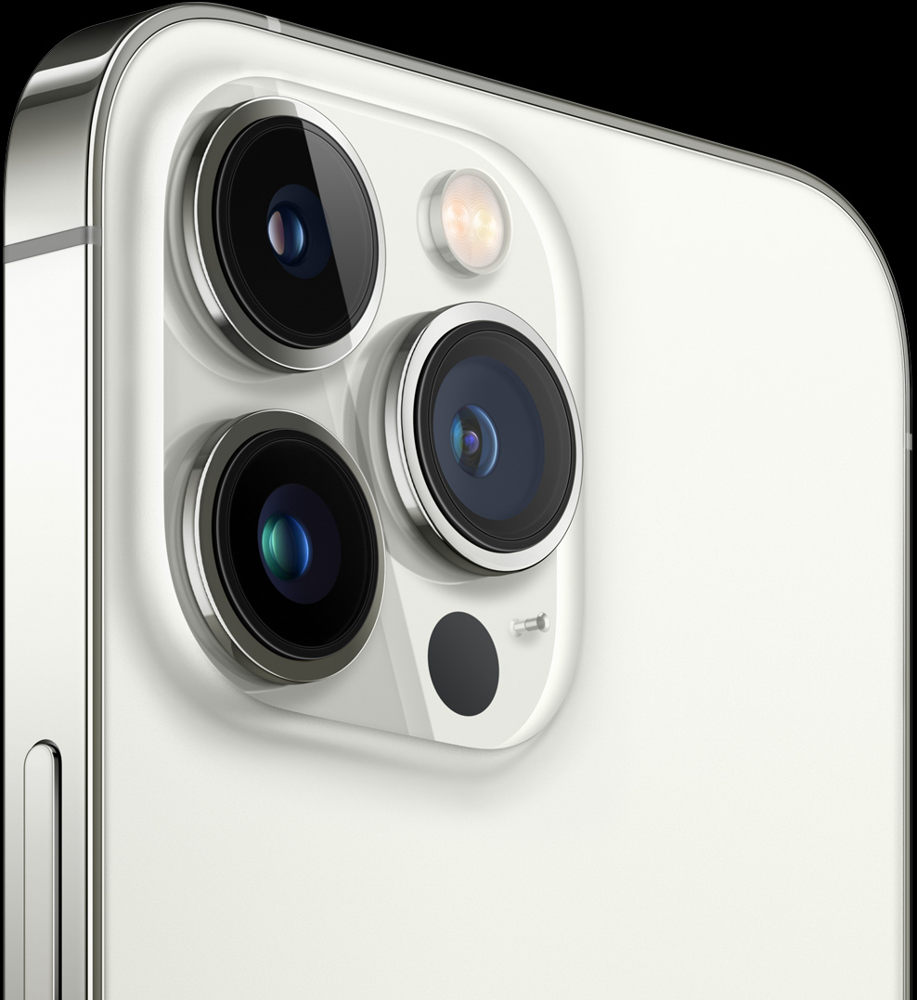

iPhone 13 Pro


stainless steel | 
any smartphone glass |
|---|


With its redesigned lens and powerful autofocus system, the new Ultra Wide camera can focus at just 2 cm — making even the smallest details seem epic. Transform a leaf into abstract art. Capture a caterpillar’s fuzz. Magnify a dewdrop. The beauty of tiny awaits. |
|---|
including slow motion and time-lapse. Prepare to be mesmerized. |
|---|

| iPhone 13 Pro was made for low light. The Wide camera adds a wider aperture and our largest sensor yet — and it leverages the LiDAR Scanner for Night mode portraits. Ultra Wide gets a wider aperture, a faster sensor, and all-new autofocus. And Telephoto now has Night mode. |
|---|---|
2.2x more light for better photos and videos |

|

| on every camera |
detailed photos and videos in any light |

|
focal length and 3x optical zoom — great for classic portraiture or shooting clearer photos and videos from far away. For closer subjects, try Portrait mode, where you can dial in the bokeh and experiment with studio-quality lighting effects. |

|
|---|---|

| on Telephoto for closer close-ups 6x optical zoom range across the system for more framing options than ever |
.png)
elegant focus transitions between subjects. Cinematic mode can also anticipate when a prominent new subject is about to enter the frame and bring them into focus when they do, for far more creative storytelling. You have the option to change focus or adjust the level of bokeh even after capture. We can’t wait to see what you do with it. | after you shoot Shoot with the Wide, Telephoto, or TrueDepth camera in Cinematic mode Cinematic mode supports Dolby Vision HDR |
|---|

of each camera. Telephoto 77 mm focal length 3x optical zoom ƒ/2.8 aperture Focus Pixels 6-element lens OIS |  |
|---|---|
13 mm focal length ƒ/1.8 aperture Faster sensor Focus Pixels 6-element lens | |
26 mm focal length 1.9 μm pixels ƒ/1.5 aperture 100% Focus Pixels 7-element lens Sensor-shift OIS |
{kind=link}
{kind=link}